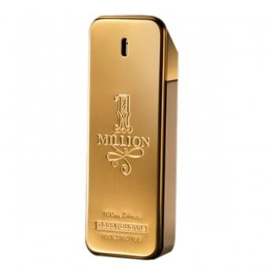
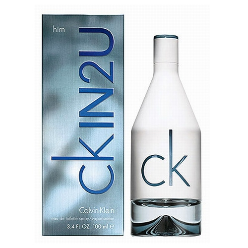
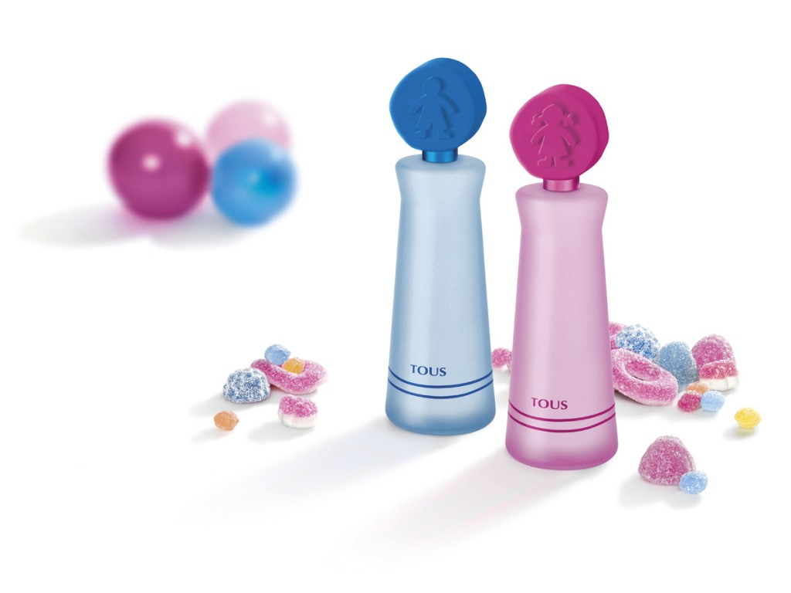

3 PERFUMES DE PACO RABANNE

La armonía, la nobleza y la firma de esta fragancia te conquistarán como ninguna otra. La mandarina, intensa y penetrante, abre paso al poderoso y denso corazón floral, con un aire de misterio gracias a una nota de rosa. En el fondo, un acorde de cuero, masculino y sensual, le da una personalidad única a esta fragancia inconfundible, una firma como ninguna otra.
Sensual, atrevida y elegante, esta es una nueva variación, 1 Million Absolutely Gold de Paco Rabanne.>
$950.00

Paco Rabanne es fresco y herbáceo, con acentos de romero, laurel, salvia y palo de rosa. La lavanda asociada al geranio, le da un carácter "helechos". El fondo dulzón lo aportan el haba tonca, el musgo, la miel y el ámbar.
$900.00

Paco Rabanne está hecha para el hombre moderno que quiere mantenerse fresco. Para el ejecutivo y hombre de negocios que vive rodeado de éxito, no por nada los anuncios del producto versan entre un Cadillac, una maleta llena de dólares y una modelo en minifalda.
$1100.00
MUESTRA 3 PERFUMES DE PACO RABANE
3 PERFUMES DE ANTONIO BANDERAS
CARACTERÍSTICAS DEL PRODUCTO
Tipo Eau de Toilette
Género masculino
Presentación de 50 ml
Notas de salida de bergamota y grosella negra
Notas de corazón de cilantro, cardamomo y nuez moscada
Notas de fondo de madera de cedro, tonka, ámbar y almizcle
$890.00

Antonio Banderas presenta su nueva fragancia un Hombre que adora el juego de la seducción, capaz de seducir incluso a la gran seductora.
$500.00
Fragancia masculina, sensual y con gran personalidad
Notas de salida: almizcles y madera de cedro y cuero
Presentación por 100ml
El verdadero secreto de un hombre
Diseño elegante y original
$900.00
MUESTRA 3 PERFUMES DE ANTONIO BALDERAS
3 PERFUMES DE CALVIN KLEIN

Un perfume que captura el espíritu de hoy, joven, espontáneo, de diseño urbano y gráfico que sorprende por el contraste del frasco blanco lechoso y del licor color de oro pálido.
$850.00

Eternity for Men está construida sobre una base "fougère", creada por la lavanda y el coumarin, y actualizada con un empleo masivo de notas florales transparentes, que se asocian a continuación con notas acuáticas, realzadas con toques afrutados. Es esto lo que le imprime su modernidad, denominada también "nueva frescura", vale decir una frescura no cítrica, suave, limpia y duradera.Calvin Klein ha creado una nueva fragancia.
$700.00
.jpg)
Premium y puramente masculina que potencia la herencia Calvin Klein. la simplicidad. y refleja la esencia del hombre Calvin Klein. Caalvin Klein Man personifica el minimalismo vanguardista y la provocación de Ca
Atributos de Fragancia: Una combinación de frescor vigorizante. especias exóticas y ricas maderas.
Notas de Fragancia: Salida: fresco vigorizante. romero. mandarina. bergomota y hoja de violeta. Corazón: especias exóticas. laurel. nuez moscada. incienso y menta.
$650.00
3 PERFUMES DE ELIZABETH TAYLOR

Hecho en EE.UU.
Violet Eyes Perfumes de Mujer Eau De Parfum Spray de 1.7 oz / 50 Ml
Todos nuestros perfumes son 100% originales de sus diseñadores originales. Nosotros no vendemos imitaciones o cualquier immitations.
Embalaje de este producto puede variar de la mostrada en la imagen de arriba
Ofrecemos muchos grandes ventas y descuentos que hacen de este perfume barato que en los grandes almacenes.
$650.00
.jpg)
Es sin duda un olor fuerte, que es bueno para cualquier persona mayor de 50 años, yo no diría 'abuela', porque este es un viejo olor, pero es algo que a mayor edad señoras probablemente usaban cuando eran adolescentes ". Otra mujer dice: "Lo recibí como un regalo de Navidad y lo intentó, pero tuvo que dar a la basura, porque no podía soportarlo Me encanta el envase -. Siempre es tan elegante que no puedo manejar el olor.
$400.00

Dewberry fresco se mezcla con el ámbar, jazmín, ámbar cremoso y almizcle para crear un aroma que es a la vez femenino y suave.Esta fragancia informal es perfecto para llevar cuando usted va acerca de sus actividades diarias. Splash en antes de un viaje a la tienda de comestibles o una tarde informal en casa y disfrutar del toque de dulzura.
$500.00
3 PERFUMES DE PARIS HILTON

es una fragancia de la familia olfativa Floral Frutal para Mujeres. Esta fragrancia es nueva. Dazzle se lanzó en 2012. La Nariz detrás de esta fragrancia es. Las Notas de Salida son durazno (melocotón), manzana roja y cereza ácida (guinda); las Notas de Corazón son flor de azahar del naranjo, violeta y orquídea; las Notas de Fondo son almizcle, pachulí, vainilla y champaña.
$900.00
Sus notas son de manzana, durazno, freesia, mimosa, almizclé, maderas y ylan ylang. El perfume es perfecto para usarlo todos los días o para una noche romántica.
Algunos comentarios de diferentes páginas de internet del perfume.
$550.00

Es una fragancia para la mujer sexy y sensual pero a la vez muy glamorosa. Es un perfume que le da a la mujer un aire de sutileza y sofisticación para toda ocasión.
$1100.00
3 PERFUMES DE CAROLINA HERRERA

Un aroma creado por la hija de la diseñadora venezolana, Carolina Adriana Herrera, responsable de la línea de perfumes, y dirigido a una mujer “segura de sí misma, independiente, divertida, moderna y que sabe lo que quiere”. Se trata de un perfume inspirado en sus recuerdos de infancia que desprende un aroma fresco, floral y dulce, con toques orientales.
$650.00

Es el aroma de Nueva York, el aroma de la vida. La botella evoca el mismo concepto artístico que el perfume, moderno, urbano, carismático y único como la ciudad de Nueva York. La fragancia es optimista, un símbolo de la curiosidad y de la energía de una mujer joven viviendo en la urbe neoyorkina.
$900.00

La colección CH Carolina Herrera alcanza una audiencia más extensa, con los mismos niveles de calidad, exclusividad y sofisticación, cuero y plata: materiales atemporales que expresan elegancia clásica y calidad. Rojo: el color de la emoción. El color de la confianza y la fuerza para la mujer que no teme dejar su marca en todo lo que hace. Un Eau de Tolilette perfecto para cada ocasión, de la mañana a la noche.
$1000.00
MUESTRA 3 PERFUMES DE CAROLINA HERRERA
PERFUMES PARA NIÑOS DE DISNEY

En los últimos tiempos de la esencia conseguida en el supermercado para el día a día, se han pasado a productos ideados por las grandes marcas de perfumes. Lo que intentan ofrecer son unas fragancias diferentes( aunque siguen siendo colonias en definitiva) con un olor con el que también se identifique la mamá y, según los responsables, aumente la conexión entre madre e hijo dentro de ese momento de contacto especial.
$600.00

Todos altamente efectivos, sus coloridos tonos de maquillaje y, para los que no conocían esta faceta, también destacan sus increíbles perfumes de mujer y hombre y, con la llegada de la primavera, entre sus perfumes de mujer nos deleitan con la nueva incorporación a su catálogo de fragancias femeninas, el perfume Eau Tropicale, una fragancia que evoca la atmósfera intrigante, cálida y perfumada que queda tras una lluvia tropical.
$550.00
Emplean manzana verde ácida con las garantías ‘vegetales’ de esta marca ecológica para crear una colonia para los más pequeños. Toman otra variedad de la manzana, la reineta, para hacer una colonia para los niños más apuestos.
$200.00
MUESTRA 3 PERFUMES DE DISNEY
PERFUMES PARA NIÑOS DE MARVEL
Otra de las opciones que suelen seducir a los niños ya no tan pequeños es a elegir las colonias de sus personajes favoritos. Aquí el contenido del frasco es lo de menos, se trata de persuadir a los rebeldes para usar colonias a cambio de poder emular a sus héroes.
$450.00

Llega el verano y a todas nos apetece una fragancia más especial, que nos de un toque de frescura y diversión a nuestro look habitual.. Estos porcentajes, además, se componen de ingredientes florales, cítricos, alguna madera y alguna hierba aromática.Su huella es mínima y perceptible unas tres horas en la mayoría de los casos.
$300.00
Su olor es suave y fresco, como ya se ha dicho.No contiene alcohol o su contenido es muy bajo.Son hipoalergénicos.Sólo contiene entre un 3% y un 5% de esencias, mientras que el resto son aguas, fijadores y otras sustancias que no aportan aroma o notas de olor
$400.00
PERFUMES PARA NIÑAS DE TOUS

Son aromas que potencian el alma inocente e ingenua de la niña. Posiblemente, cuando la pequeña crezca, será transportada a los recuerdos de su tierna infancia con sólo olerlo.
$600.00
.jpg)
La firma ha diseñado tres productos en esta línea: una base cítrica para una de niñas sin alcohol, una delicada mezcla de frutas y flores para niñas algo más mayores que ya empiezan a ser presumidas.
$350.00

“Los niños deberían oler a la marca de uno”. Hay quién opina que los perfumes son tan importantes en la infancia porque en el futuro, estas almas cándidas serán capaces de revivir parte de las emociones que pasaron durante esa época de su vida, con tan solo volver a oler la fragancia en cuestión. E incluso es más que probable, que muchos de ellos seguirán consumiendo perfumes de esa misma marca, apropiados para su edad.
$250.00
PERFUMES PARA NIÑAS DE DISNEY
Con este tipo de perfumes las niñas a demas de tener a su lado una fragancia que les proporcione un rico aroma, tambien traen consigo a sus personajes faroritos como en etes caso el de las hadas.
$600.00
perfumes ya que son parte de la coleccion que siempre quedra tener una niña de esa edad.Con ese aroma a niñas que van experimentando cada accion a los largo de sus dias.
$500.00

llega ahora al area de perfumes, trayendo consigo una convinacion de frutas silvestres con los mas dulces aromas, para demostrar en las pequeñas esa inocencia que llevan consigo mismas.
$750.00